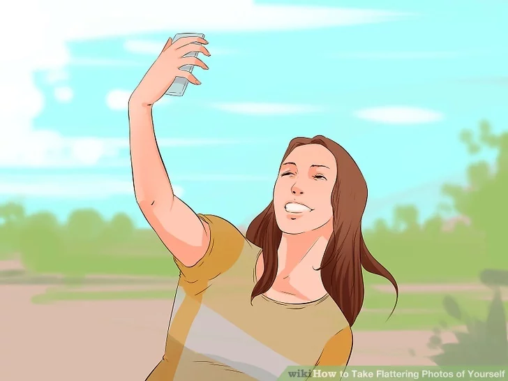
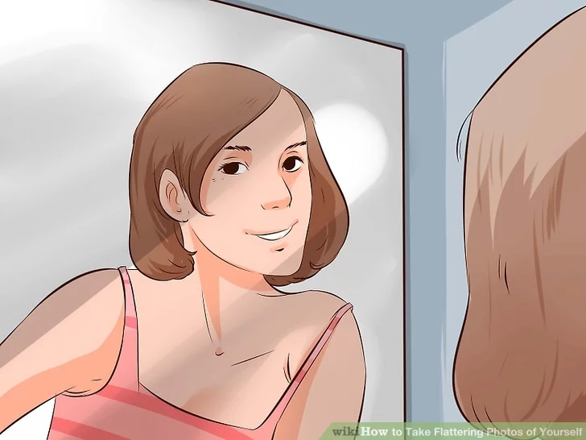

Shoot from above. Shooting the photo from above will provide a more flattering angle. It will likely emphasize your eyes and make your face and neck seem smaller. Shooting from below can make some people seem powerful, but it usually makes the chin and nose look prominent, which is not a flattering look for most people. It’s best not to go too high so the photo doesn’t get distorted. Hold the camera out and a little above eye level. Then take the picture.
Find the shadowed side of your face. Look at your face in a mirror or the camera (or take a practice photo), and find which side of your face looks darker due to being further from the light source. Take the photo from the shadowed side for an artistic and slimming effect. This approach may not work in direct sunlight.
Do not center yourself in the shot. The best photographs follow what’s known as the rule of thirds. This means that your eyes should be one third of the way down from the top of the photo and off to one side. This provides a more interesting photograph and probably a more flattering angle.